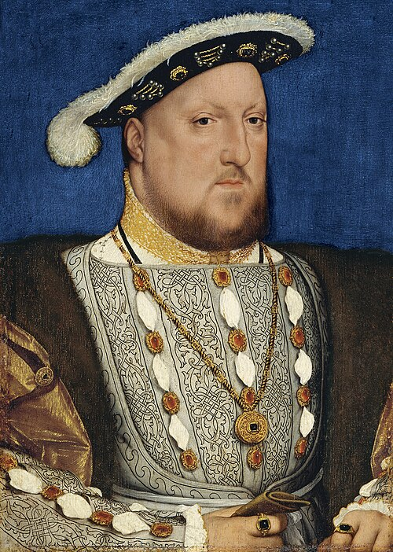

By the Grace of God, King of England, France & Ireland
1491 to 1547 · 37 years on the throne · one Church broken · six queens

Henry VIIISix marriages in 34 years
Move over a portrait to tilt it. Click to turn it over. Open the full story from the back.
On the wedding day
Ages marked ~ are estimates. Birth years of Anne Boleyn, Jane Seymour, Catherine Howard and Catherine Parr are not recorded.
Fifty-five years, scroll by scroll
Drag through time
Scrub the year, or press play, to see who was alive, who was married to whom, and how old everyone was.
Were you paying attention?